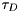

$$qf_commondoc_header.start$$ $$qf_commondoc_header.end$$
This plugin implements a 2D diffusion model for the fitting routines in QuickFit. The model may be denoted as:
$$bmath:G(\tau)=G_\infty+\frac{1}{N}\cdot X_{back}\cdot\left(\frac{1-\Theta_{non}+\Theta_{non}\mathrm{e}^{-\tau/\tau_{non}}-\Theta_{trip}+\Theta_{trip}\mathrm{e}^{-\tau/\tau_{trip}}}{1-\Theta_{non}-\Theta_{trip}}\right)\cdot\left[(1-\rho_2-\rho_3)\cdot g_1(\tau)+\rho_2\cdot g_2(\tau)+\rho_3\cdot g_3(\tau)\right]$$
with
$$bmath: g_i(\tau)=\left(1+\frac{\tau}{\tau_{diff,i}}\right)^{-1}$$
The background correction is performed by factor
$$bmath:X_{back}=\frac{(I-B)^2}{I^2}.$$
The parameters are:
 : offset of the correlation function
: offset of the correlation function : overall particle number (including currently dark particles, e.g. in triplet state)
: overall particle number (including currently dark particles, e.g. in triplet state) : fraction of the particles in one of the first two non-fluorescent states (triplet, ...)
: fraction of the particles in one of the first two non-fluorescent states (triplet, ...) : decay time of the first two non-fluorescent states (triplet, ...)
: decay time of the first two non-fluorescent states (triplet, ...) : fractions of the three diffusing components
: fractions of the three diffusing components : diffusion decay time of the i-th diffusing component
: diffusion decay time of the i-th diffusing component : lateral half axis of the focus gaussian
: lateral half axis of the focus gaussian- b: background intensity, as measured in a sample without fluorescing molecules (e.g. dark counts of the detector and scattering in the buffer contributes to this)
- cps: average background corrected intensity during the measurement, i.e. cps=Imeasured-b
This model also calculates the diffusion coefficient, if the width of the laser focus (xy plane) is known, as:
![\[ D=\frac{w_{xy}^2}{4\tau_D} \]](./pic/form_400.png)
where  is the diffusion time. This model also calculates the effective focal area:
$$bmath: A_{eff}=\pi\cdot w_{xy}^2$$
Given the count rate cps and the background count rate b, we can calculate the counts per molecule:

The plugin also calculates some parameter errors:
![\[ \Delta \left(\frac{1}{N}\right)=\left|\frac{\Delta N}{N^2}\right| \]](./pic/form_900.png)
![\[ \Delta D=\sqrt{\left(\Delta w_{xy}\cdot\frac{w_{xy}}{2\tau_D}\right)^2+\left(\Delta \tau_D\cdot\frac{w_{xy}^2}{4\tau_D^2}\right)^2} \]](./pic/form_100.png)